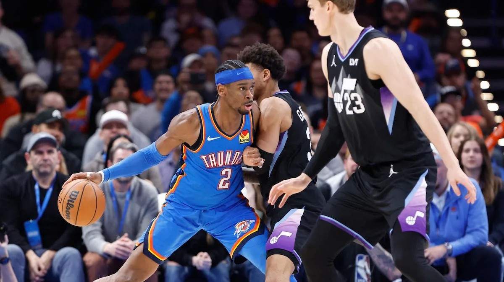

Shai alcanza por primera vez la barrera de los 50 y reafirma su candidatura al MVP
La estrella de OKC superó su career-high sumando un total de 54 puntos para ganar a Utah en un partido más complicado de lo esperado.
Josep Falagán
No hay rival fácil en la NBA. Los Utah Jazz (10-32), colistas del Oeste, visitaban al líder de dicha conferencia, los Oklahoma City Thunder (36-7). Aunque la clasificación refleje una diferencia abismal, la realidad es que el partido estuvo disputado hasta prácticamente el último instante. Los pupilos de Will Hardy, aprovechando las bajas locales en el juego interior, hicieron mucha mella a través de un quinteto con muchos centímetros. Y es que, de hecho, durante gran parte del encuentro juntaban a la vez a tres jugadores por encima de los 2'11 metros: John Collins (2'11), Lauri Markkannen (2'13) y Walker Kessler (2'13) fueron de la partida inicial para los de Salt Lake City, acumulando entre ellos 15 de los 23 rebotes ofensivos de su equipo.
Uno de los mejores del mundo
No obstante, el talento puro es muy difícil de contener, especialmente cuando hablamos de Shai Gilgeous-Alexander. Una vez más, ante una situación de urgencia, se echó el equipo a la espalda y fue tirando del carro sin demasiada ayuda durante la primera mitad. Los triples no entraban para OKC y la diferencia en el rebote era un problema. Mark Daigneault, viendo que ni Jaylin Williams ni Branden Carlson paliaban este hándicap, optó por volver al habitual recurso de jugar con cinco pequeños, siendo Jalen Williams (1'96) el teórico pívot. De esta manera, tanto el primer cuarto como el segundo se cerraron con un tímido +2 para los de azul.
| Equipos | 1Q | 2Q | 3Q | 4Q | FINAL |
|---|---|---|---|---|---|

|
31 | 26 | 38 | 28 | 123 |

|
29 | 26 | 34 | 25 | 114 |
Tras la vuelta de vestuarios, los Jazz arrancaron con fuerza y tomaron momentáneamente la delantera. Por suerte para los Thunder, los triples que no entraban empezaron a caer a cuentagotas para contrarrestar el buen momento de su rival. Además, el bueno de JDub, tan criticado últimamente por su bajón en ataque, volvió a ser el escudero más confiable para SGA aportando 25 puntos de alto valor. Mientras que desde el banquillo emergieron las figuras de Alex Caruso (7 pts, 5 ast, 4 rob) y Cason Wallace (13 pts), que esta vez no fue de la partida inicial.
Finalmente, ya en el último periodo, emergió de manera imparable la figura del máximo aspirante al MVP, que no es otro que Shai. Su récord anotador estaba situado en 45 puntos, algo más bajo de lo habitual para un jugador de su calibre, pero en esta ocasión, con el partido en el alambre, se fue hasta los 54 puntos, sumando a su hoja estadística 8 rebotes, 5 asistencias, 3 robos y 2 tapones. Toda una exhibición de recursos infinitos con los que anotar que le hacen imparable. De tres, de media distancia, debajo del aro, amagos que se suceden uno tras otro y un sinfín de ingredientes para crear al anotador más letal del mundo.
MÁS ARTÍCULOS...